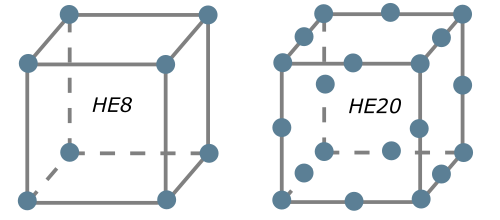
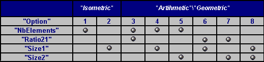
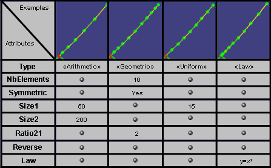

A "late type" must be given to indicate which type of mesh part is to be created.
In the case of the partition hex mesh part, the late type is "CATFmtPartitionHexMesher".
The partition hex mesh part can be created by using Add method of SimMeshParts object.
The Partition Hex Mesh Part support can be initialized and managed using the AddSupport method of SimMeshPart object:
-
AddSupport ( iSupport As AnyObject ) to add a new support to the mesh part
Global mesh specifications can be set or retrieved using
following methods of SimMeshPart object:
-
SetAttributeValue ( iSetType As String, iAttribute As String, iValue ) to set a mesh attribute
-
GetAttributeValue ( iSetType As String, iAttribute As String, oValue ) to get a mesh attribute value
iAttribute is the
name of specification and iSetType = "Mesh" for all Global Mesh Specifications.
MeshSizeValue
Type: double
valuated to the wanted size for mesh elements (it is an objective).
|
Attribute which specifies the global size of the mesh (it's an
objective, Partition Hex mesher tried to approach nearest possible from this
size).
|
ElementOrder
Type: integer
valuated to:
- 1: to get a mesh with linear hexaedron (HE8)
- 2: to get a mesh with quadratic hexaedron (HE20)
default value: 1
|
Attribute which specifies the number of intermediate nodes per element edge, as shown
on the pictures (the left one shows a linear hexahedron and the right one shows
a parabolic hexahedron).
|

|
NonHexShapeAndOrder
Type: integer
valuated to:
- 1: to get a mesh with quadratic tetrahedrons (TE10).
- 2: to get a mesh with linear tetrahedrons (TE4).
- 3: to use a mesh with linear tetrahedrons and pyramids (TE4 and PY5 or TE10 and PY13)
default value: 1
|
This attribute specifies the which kind of elements will be used for the non hex elements.
|
Local mesh specifications are created by the Add method of the SimMeshSpecifications object.
- Add ( iType As String ) with:
- iType is the late type of the mesh specification to
create.
The Item and the Remove methods work with an index which is the position
of the specification in the collection. The position index starts from 1.
The support of the local topology specification is managed by the SimLinkAccess object:
- AddLink ( iName As String, iLink As AnyObject )
- RemoveAllLinks ( iName As String )
- RemoveLink ( iName As String, iLink As AnyObject )
- iName is the name of the link container, here it's "ConnectorList"
The specification values are managed by the following methods of
SimMeshSpecification:
- GetAttributeValue ( iAttribute As String, oValue )
- SetAttributeValue ( iAttribute As String, iValue )
- iAttribute is the attribute name to set/retrieve.
CATFmtStudioDistributionSpec
|
Distribution specification (named for example localSpec) can be applied
only on one edge resulting of an unique grouping specification.
Specification attributes are managed using SimMeshSpecification object:
- Geometric attribute (supports)
Other attributes are managed using (GetAttributeValue,
SetAttributeValue):
- Type: integer defining the type of distribution valuated to:
- 1: for a Uniform distribution (Isometric)
- 2: for an Arithmetic distribution
- 3: for a Geometric distribution
- 4: for a distribution defined by a Law
default value: 1
- Combination: integer indicating what are the
possible combination for Arithmetic or Geometric distributions valuated to:
- 1: for a distribution defined by the number of elements (NbElements)
and the size ratio of the elements (Ratio21)
- 2: for a distribution defined by the number of elements (NbElements)
and the size (Size1) at first vertex
- 3: for a distribution defined by the number of elements (NbElements)
and the size (Size2) at second vertex
- 4: for a distribution defined by the size ratio (Ratio21) and the size
(Size1) at first vertex
- 5: for a distribution defined by the size ratio (Ratio21) and the size
(Size2) at second vertex
- 6: for a distribution defined by the size (Size1) at first vertex and
the size (Size2) at second vertex
default value: 1
- CombinationUnif: integer indicating what are the
possible combination for Uniform distributions valuated to:
- 1: for a distribution defined by the number of elements (NbElements)
- 2: for a distribution defined by the size (Size1) of the elements
default value: 1
default value: 4
- RatioValue: double defining the ratio between the max
element size and the min element size (Ratio21)
default value: 1.
- Size1Value: double defining the size at first vertex
(Size1)
default value: 0.
- Size2Value: double defining the size at second vertex
(Size2)
default value: 0.
- Symmetry: integer valuated to:
- 1: to keep the distribution unchanged
- 2: to compute a symmetric distribution with current attributes
default value: 1
- Reverse: integer usable for Law and non Uniform distribution
valuated to:
- 1: to keep the distribution unchanged
- 2: to invert the distribution
default value: 1
|
Description: This specification creates a node distribution on an edge resulting of a 1D
grouping specification. Depending on the choice of the distribution type (Type attribute), Combination
or CombinationUnif attributes several various distributions "Option" can be computed. The next
table summarize all "Option":
- Isometric (Uniform) distribution is defined by only one attributes(Option 1 and 2):
- Nbelements (CombinationUnif= 1)
- Size1 (CombinationUnif= 2)
- Non isometric distribution is defined by two attributes as indicated in the next table. There
are six couples of attributes (Option 3 to 8):
- Nbelements and Ratio21 (Combination = 1)
- NbElements and Size1 (Combination = 2)
- NbElements and Size2 (Combination = 3)
- Ratio21 and Size1 (Combination = 4)
- Ratio21 and Size2 (Combination = 5)
- Size1 and Size2 (Combination = 6)

The next table shows examples of various distributions using additional Symmetry and Law attributes.

|